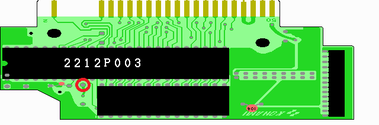

５．ROMを外す
この作業が似非SCCを作る上でのメイン作業です。全工程の中で、一番時間がかかる面倒な作業です。下記の道具が必要になります。
- 半田ごて（必須）
- 半田吸い取り器 もしくは 半田吸い取り線（必須）、
- ニッパー（必要に応じて）
- ドライバ（必要に応じて）
ROMはコネクタに近い方にあるICです、間違っても2212P003（メガロムコントローラ）をとらないようにしましょう。
ここでは、ROMを外す方法として、「ROMを壊して外す方法」と「ROMをきれいに抜き取る方法」の2通りを紹介します。基本的に外したROMは使用しないので、前者で構いません。後者はちょっと難しく、初心者にはお勧めできません。後者は別の工作でICをきれいに外す必要ができた場合に備え、練習方法として紹介しています。
●ROMを壊して外す方法「足パチパチ法」
１ ROMの足をICの根元からニッパーでパチパチときります。
できるだけ基板に残る部分を長くすると楽です。
全ての足を切断し、外れたROMはごみ箱へ。
２ 残った足に半田ごてをあて、一本ずつ引き抜きます。
28本もあって面倒とは思いますが、根気よくやりましょう。
無理に引き抜きますと、基板のパターンを剥がしてしまうので注意してください。
３ 半田吸い取り器もしくは半田吸い取り線で残った半田を吸い取ります。
足の刺さっていた部分に半田が残っていると、SRAMの足が入りません。
半田吸い取り器を使う場合は万力などで基板をはさみ、片側から半田ごてで熱し、もう片側から半田吸い取り器で吸い取ると楽でしょう。
半田吸い取り線は、吸い取り線を残った半田の上にあて、その上から半田ごてで熱するようにして使います。中途半端に残ってうまく取れない場合は、一度その上に半田を加えてから、再度吸い取り線を使用すると良いでしょう。（秘技！友釣り）
●ROMをきれいに抜き取る方法
１ 基板を万力等で立てて固定する
２ 部品面から半田ごてをあててROMの足を熱する。
３ ROMの足を内側に軽く押す感じでゆすり、半田が溶けていることを確認する。
４ ROMの足を内側に軽く押した状態で、反対の面から半田吸い取り器を使って半田を吸い取る。
このとき、半田ごては基板から少し離れていると吸い取り易いです。（ROMの足からは離さない。）
５ 5Vのピン（ROMのはじの足）は半田が溶けるまでに20〜30秒かかることがありますが、あせらないようにしてください。他の足は5〜6秒程度で溶けると思います。
６ うまくいかなかったら、半田を足してみて、もう一度チャレンジ！
７ 28ピン全てやり終わったら、ICの下にマイナスドライバ等を差し込み、てこの要領でICをはずします。
このとき、基板を傷つけないように注意してください。
また、以下の図の赤い丸で示した部分の半田もとっておいてください。
後でSRAMを差し込むときに、SRAMの32ピンを入れます。

どのやり方でもいえることですが、ROMを抜き取った後の穴は半田をきれいに
取っておきます。きれいに取っておかないと、SRAMを差し込む時に困ってしまいます。
●おまけ
「はんだシュッ太郎」があると楽にきれいにROMを抜き取れますが、ちょっと投資が必要になります。
１ 部品面の反対側から、はんだシュッ太郎をあててROMの足を熱する。
２ ROMの足を軽く押す感じでゆすり、半田が溶けていることを確認する。
３ 半田シュッ太郎の吸い取りスイッチを押して半田を吸い取る。
４ 5Vのピン（ROMのはじの足）は半田が溶けるまでに20〜30秒かかることがありますが、あせらないようにしてください。他の足は5〜6秒程度で溶けると思います。
５ うまくいかなかったら、半田を足してみて、もう一度チャレンジ！
６ 28ピン全てやり終わったら、ICの下にマイナスドライバ等を差し込み、てこの要領でICをはずします。
このとき、基板を傷つけないように注意してください。
 次へ
次へ